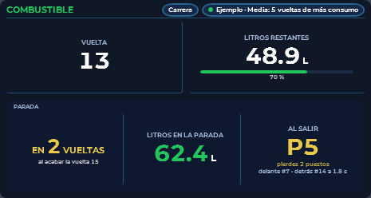

Guía › COMBUSTIBLE › Los datos del overlay
Los datos del overlay
Qué significa cada casilla y de dónde sale.
Los datos del overlay

- VUELTA
- La vuelta que estás corriendo, la misma que dicen iRacing y los demás overlays.
- VUELTAS STINT
- Vueltas desde la última vez que saliste del pit lane.
- PARADA
- Cuándo tienes que entrar: «EN 3 VUELTAS» (y debajo «al acabar la vuelta 27»), «ESTA VUELTA» en rojo (entra al llegar a boxes), «¡NO LLEGAS!» (no da para acabar la vuelta) o «NO · llegas al final». Con la bandera a cuadros ya no propone paradas: solo dice si llegas a la meta.
- LITROS RESTANTES
- Litros que hay ahora en el depósito (lo dice iRacing).
- VUELTAS RESTANTES
- Vueltas que puedes dar con esos litros, gastando lo de tu consumo medio. No confundir con «Faltan» (las vueltas que le quedan a la carrera).
- CONSUMO MEDIO
- Litros que gastas de media en cada vuelta (L/v). Cómo se calcula: capítulo «Cálculo del consumo».
- LITROS EN LA PARADA
- Litros que te faltan para acabar la carrera, con el margen de seguridad sumado.
- TIEMPO DE PARADA
- Cuánto tiempo pierdes en la parada. Viene apagada: ver el capítulo «Tiempo de parada».
- FALTAN
- Vueltas que le quedan a la carrera, desde donde vas (por eso lleva decimales). En carreras por vueltas, las que quedan. En carreras por tiempo, una estimación con tu tiempo de vuelta normal.
- OBJETIVO POR VUELTA
- Litros por vuelta que puedes gastar para llegar a meta sin parar (litros restantes ÷ vueltas que faltan + margen de final). Viene apagada: fila nueva, se enciende en «CASILLAS».
- ¡EMPIEZA A AHORRAR!
- Aviso en la casilla OBJETIVO POR VUELTA (en amarillo), solo en carrera: llegabas a meta sin parar y, al ritmo de tus 2 últimas vueltas válidas, ya no llegas. Dice cuántos litros te faltan. Se quita en cuanto vuelves a llegar o entras en boxes.
- ÚLTIMA VUELTA
- Lo que gastaste en tu última vuelta válida. En ROJO si pasaste del objetivo (con cuánto), en VERDE si no.
- VENTANA DE PARADA
- Primera y última vuelta en las que puedes entrar a boxes (al acabar esa vuelta). La última es la de PARADA; la primera, la primera desde la que, llenando el depósito, llegas a meta con el margen de final. ABIERTA en verde, PRONTO en amarillo (se abre en 1 o 2 vueltas), CERRADA, SIN PARADA o «N PARADAS» (un depósito no basta: paradas = litros que faltan ÷ depósito, con los litros que faltan debajo) en rojo. La barra marca la ventana y tu vuelta. Viene apagada: se enciende en «CASILLAS».
- CONSUMOS POR VUELTA
- Tu última vuelta y los 4 modos de cálculo a la vez: media de todas las vueltas, media de las últimas (20 de fábrica) y las de más consumo (5 de fábrica) de todas o de las últimas. Debajo, las vueltas que te dan los litros que llevas. En verde, «EN USO»: el modo que usa el cálculo (se elige en «CÁLCULO DEL CONSUMO»). Solo cuentan vueltas válidas. Viene apagada: se enciende en «CASILLAS».
QUÉ VERÁS ADEMÁS
Arriba a la derecha, una línea pequeña dice con qué vueltas se ha hecho la media (por ejemplo «Media: 5 vueltas de más consumo»).
CUENTA ATRÁS DEL PITBOX: al llegar a tu plaza de boxes, un número grande cuenta los segundos que faltan (de fábrica empieza 4 s antes, uno por segundo) y los metros. Se ajusta en el apartado CUENTA ATRÁS DEL PITBOX.
CUIDADO
Para avisar de la parada, si tu última vuelta gastó más que la media, NanoRacer usa la última: así reacciona si aprietas más. Por eso la vuelta de parada puede adelantarse de golpe.